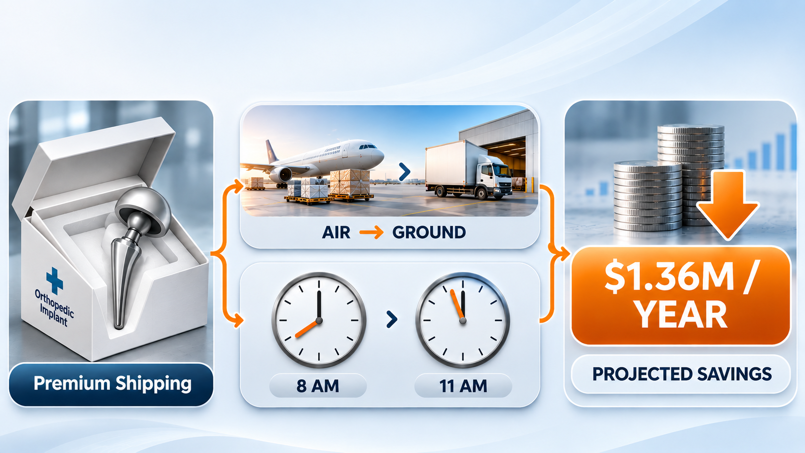
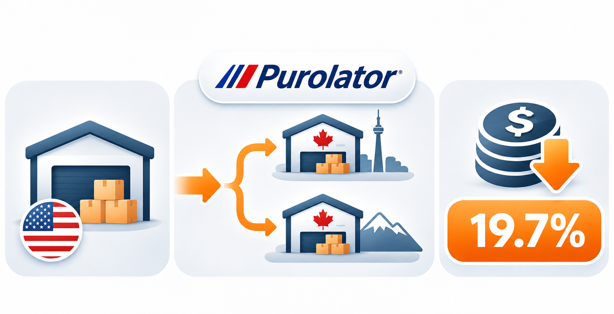
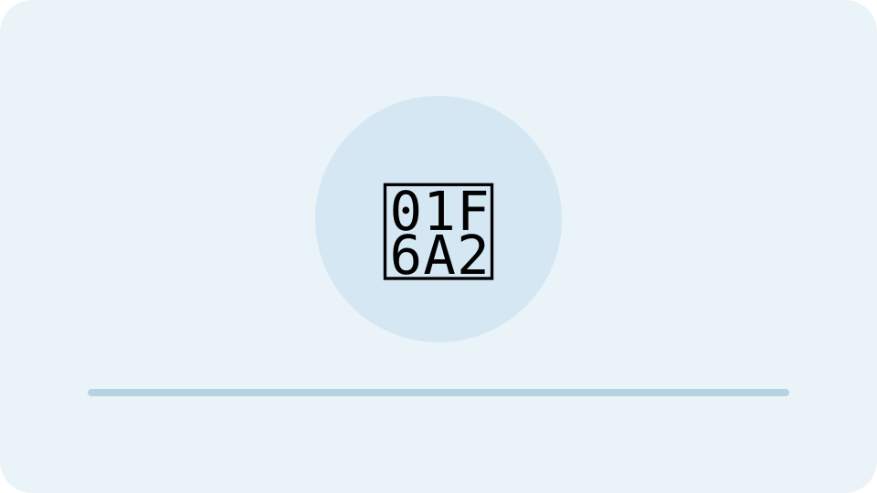
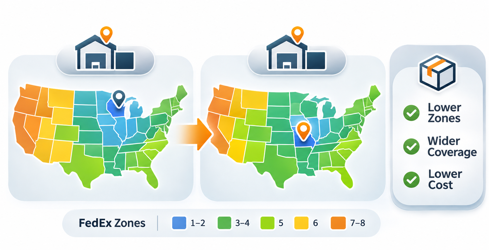
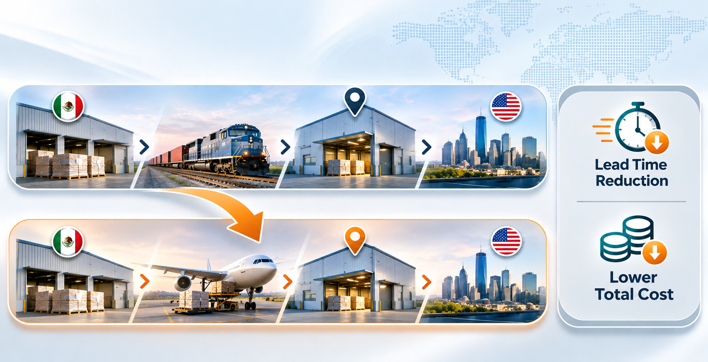
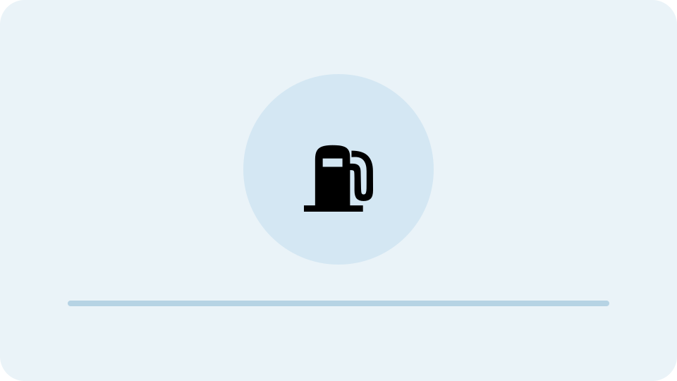
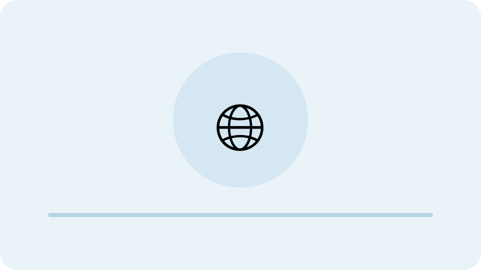

Global Freight Auditor Selection
Evaluated multi-currency EMEA freight audit solutions ($23M spend) while enforcing strict data ownership and privacy governance.
20+ years optimizing transportation networks, managing complex freight spend, and translating analytics into operational decisions.
Explore business problems, analytical approaches, and measurable results.
Evaluated multi-currency EMEA freight audit solutions ($23M spend) while enforcing strict data ownership and privacy governance.

Mode shifts from Express to Ground and overnight service optimization; $1.36M in annualized savings.

Sourced direct cross-border linehaul injection with Purolator from DFW; 19.7% lower cost per shipment.

Benchmarked four freight forwarders across 826 containers; modeled $8.43M in freight savings (65%).

Used unsupervised K-Means clustering on 378K+ shipments to redesign an orthopedic footwear distribution network.

Evaluated direct bulk-air injection to the Northeast as an alternative to routing via DFW.

Financial sensitivity model quantifying $271K+ of fuel-surcharge exposure under diesel-price shocks.

Modeled all-water versus intermodal rail alternatives across transatlantic trade lanes.
Executive leader with 20+ years optimizing global transportation networks, managing $88M+ in logistics spend, and driving data-informed decisions in regulated industries. Currently completing a Master's in Engineering Management & Leadership (Data Science Focus) at Rice University and serving as a teaching assistant.